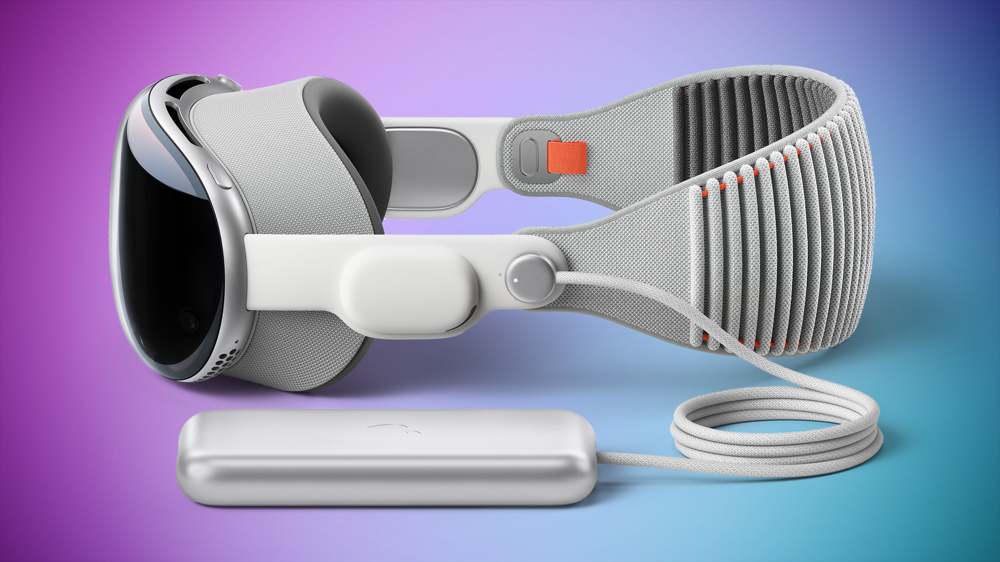

Presentamos Apple Vision Pro: el primer computador espacial de Apple
Apple presentó hoy Apple Vision Pro, un revolucionario computador espacial que fusiona el contenido digital con el mundo físico a la perfección y permite a los usuarios mantenerse presentes y en contacto con otras personas. Vision Pro crea un lienzo infinito que atraviesa las fronteras de una pantalla tradicional y presenta una interfaz completamente tridimensional operada por los controles más naturales e intuitivos que existen: los ojos, las manos y la voz de los usuarios.
Gracias a la incorporación de visionOS, el primer sistema operativo espacial del mundo, Vision Pro permite a los usuarios interactuar con el contenido digital como si estuviera físicamente presente en su mismo espacio.
El diseño innovador de Vision Pro tiene un sistema de ultra alta definición con 23 millones de píxeles distribuidos en dos pantallas. Además, incluye dos chips de Apple especialmente creados para garantizar que cada experiencia parezca estar desarrollándose frente a los ojos del usuario en tiempo real.
Un lienzo infinito para las apps en el trabajo y en casa
visionOS tiene una interfaz tridimensional que permite que las apps traspasen los límites de la pantalla y aparezcan una al lado de la otra en cualquier tamaño. Apple Vision Pro permite a los usuarios ser aún más productivos dándoles un espacio de pantalla infinito, acceso a sus apps favoritas y formas completamente nuevas de hacer varias tareas al mismo tiempo.
Check out the article here...Experiencias de entretenimiento impactantes

Con dos pantallas de ultra alta resolución, Apple Vision Pro puede transformar cualquier espacio en un cine personal con una pantalla que parece tener 30 metros de ancho y un sistema avanzado de audio espacial. Los usuarios pueden ver películas y programas de TV, o disfrutar películas sorprendentes en tres dimensiones.
Check out the article here...(57) 300-000000
Bogota D.C State - 1000
apple@correo.com